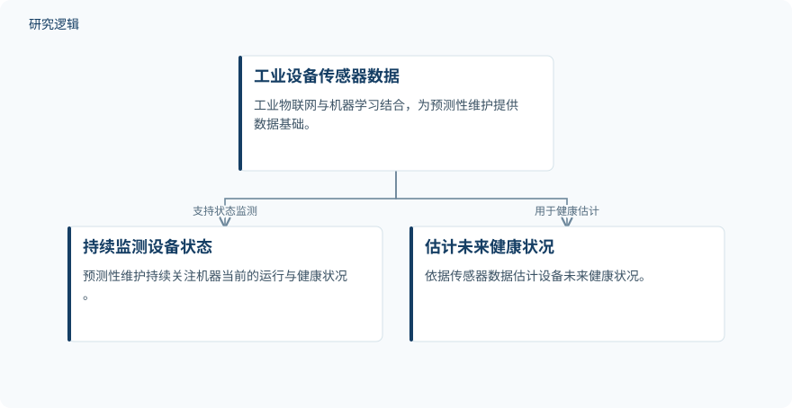

摘要解读
基于物联网与机器学习的机器健康监测及预测性维护综述：架构、算法与开放挑战
A Review of IoT-Based Machine Health Monitoring and Predictive Maintenance Using Machine Learning: Architectures, Algorithms, and Open Challenges
解读更新 2026-10-30 10:10 · 依据公开摘要整理，未核验全文细节
设备维护如何从“坏了再修”或“到期就换”，转向依据运行状态判断风险？这篇综述梳理工业物联网与机器学习如何支撑预测性维护，阅读价值不仅在于比较算法，更在于理解故障识别、寿命估计与实际部署之间尚未打通的环节。
文章目录
维护时机：避免故障，也避免过早更换
非计划设备故障影响制造业的生产效率、安全与运行成本。摘要指出，传统被动维修可能让设备运行至失效，按时间安排的预防性维护则可能过早更换健康部件，两者都未充分利用工业设备持续产生的数据。
工业物联网与机器学习结合，使持续监测设备状态、根据传感器数据估计未来健康状况成为可行选择。本文是一篇综述，关注这一预测性维护体系，而非报告一套新模型的独立实验。
从感知到云端，梳理诊断与寿命估计方法
作者考察从感知端到云端的分层架构，梳理用于故障分类和剩余使用寿命估计的特征提取与学习方法，并比较具有代表性的既有研究。
综述覆盖支持向量机、集成方法、深度网络、基于图像的诊断以及生存分析。摘要明确了讨论范围，但没有交代文献检索策略、筛选标准或纳入研究数量，因此不能仅据摘要判断其综述覆盖程度。
依据摘要整理的预测性维护关系示意


仅概括摘要中的传感器数据、持续状态监测与未来健康估计关系，不代表论文原图或已验证的整合系统。
下载 SVG图示关系说明
实线表示相邻阶段的信息流，虚线表示跨阶段联系或反馈。
工业设备传感器数据 → 持续监测设备状态：支持状态监测；工业设备传感器数据 → 估计未来健康状况：用于健康估计
已有结果可观，但不同指标不能直接排榜
摘要汇总的既有研究中，单分类器故障检测的准确率约为88%，基于视觉的齿轮箱诊断准确率为96%；生存模型在真实工业数据上的一致性指数超过0.97。这些数字来自被综述研究，不是本文统一实验得到的成绩。
准确率与一致性指数不是同一种指标，且对应任务不同，不能据此直接排列方法优劣。摘要也未提供足以确认这些研究具有相同评测条件的信息。
作者归纳的共性缺口包括：过度依赖单一算法和平衡基准数据集，故障分类与寿命估计相互割裂，生存分析在工业4.0场景中的采用有限，以及边缘部署、安全与可解释性仍有待解决。
摘要能说明趋势，不能确定验证边界
摘要未完整交代各项结果的样本规模、故障分布、训练测试划分及跨设备验证范围；其中96%准确率明确对应基于视觉的齿轮箱诊断，生存模型结果明确涉及真实工业数据。其余细节仍需查阅原文，不能将摘要未报告理解为论文没有开展相关工作。
作者最后提出将实时物联网感知与分类、预后预测相结合的研究方向，但摘要没有报告该整合方案的实施与验证结果，不能把这一展望写成已经实现的维护收益。
阅读启发：关注诊断与预后如何衔接
阅读启发：进一步阅读时，可重点追问故障分类与寿命估计如何衔接、平衡基准上的结果是否适用于实际故障分布，以及生存分析为何在工业场景中采用有限。对智能运维而言，这些问题比孤立比较准确率更值得结合部署、安全和可解释性要求审视。
以上为本站阅读启发与建议，不是论文已验证的结论。